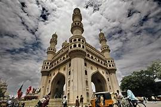
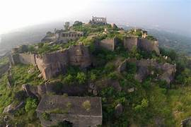
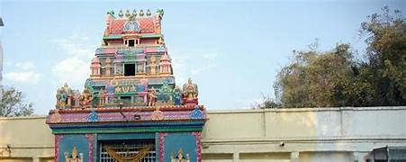
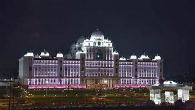
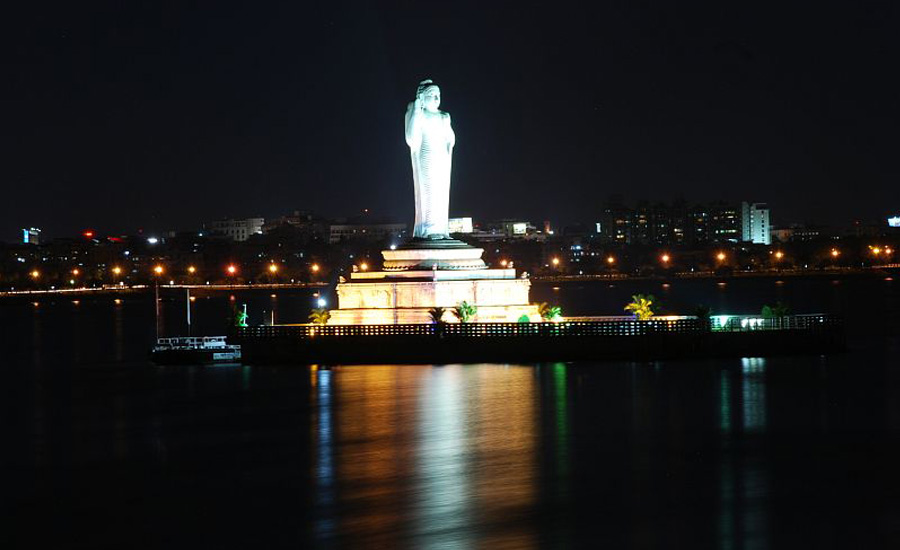
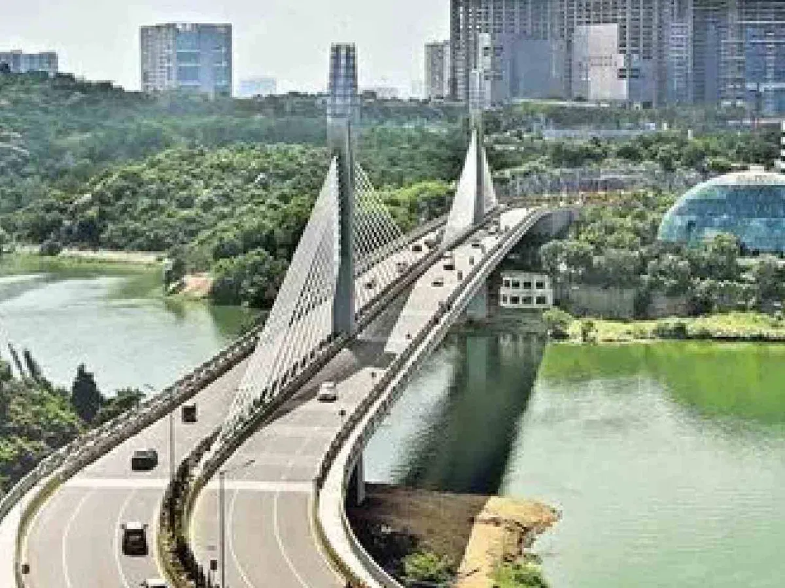

Charminar
The Charminar is an iconic monument located in the heart of Hyderabad, Telangana, India. Built in 1591 by Sultan Muhammad Quli Qutb Shah, it is a fine example of Indo-Islamic architecture with Persian influences. The structure was constructed to commemorate the end of a deadly plague that had ravaged the city. The name "Charminar" translates to "Four Towers," referring to its four grand minarets, each rising to a height of about 56 meters. Made of granite and lime mortar, the Charminar features intricately carved arches, balconies, and domes. It stands at the center of the bustling Old City and is surrounded by lively markets such as Laad Bazaar, famous for bangles and pearls. The Charminar is not only a symbol of Hyderabad's rich heritage but also a popular tourist destination, representing the city's cultural and historical significance. It is illuminated beautifully at night, enhancing its charm.
Golconda Fort
Golconda Fort is a magnificent fortress located about 11 kilometers from Hyderabad, Telangana. Built during the reign of the Kakatiya dynasty and later expanded by the Qutb Shahi kings in the 16th century, it is renowned for its impressive architecture and advanced engineering. The fort was once the center of a thriving diamond trade and is believed to have been the source of famous gems like the Koh-i-Noor and Hope Diamond. Spread across 11 kilometers of land, Golconda features massive gates, bastions, royal halls, temples, mosques, and secret tunnels. One of its unique features is the acoustic system— a clap at the entrance can be heard at the highest point of the fort, nearly a kilometer away. Surrounded by strong granite walls and dotted with watchtowers, Golconda Fort stands as a symbol of Hyderabad's rich history. It attracts tourists for its grandeur and the light and sound show held in the evenings.
Chilkur Balaji Temple
Chilkur Balaji Temple, popularly known as the "Visa Balaji Temple," is an ancient Hindu temple located on the banks of Osman Sagar Lake near Hyderabad, Telangana. Dedicated to Lord Venkateswara (Balaji), it is believed to be over 500 years old and is one of the few temples in India that does not accept any donations. The temple is famous for its unique tradition — devotees often visit to seek blessings for securing visas for overseas travel. Pilgrims typically perform 11 pradakshinas (circumambulations) when making a wish and 108 pradakshinas after the wish is fulfilled. The temple is known for its peaceful atmosphere and natural surroundings. Managed without government control, Chilkur Balaji Temple emphasizes equality, as there are no VIP privileges. It is a spiritual and cultural landmark, attracting thousands of devotees every week, especially students and professionals seeking divine guidance.
Telangana Secretariat
The Telangana Secretariat, located in Hyderabad, serves as the administrative headquarters of the state government of Telangana. Established in 2014 after the bifurcation of Andhra Pradesh, it is housed in a modern building designed to accommodate various government departments and offices. The Secretariat plays a crucial role in the governance and administration of the state, housing key officials, including the Chief Minister and other ministers. The architecture of the Secretariat reflects contemporary design while incorporating elements of traditional Indian aesthetics. It is equipped with advanced facilities to ensure efficient functioning of the government machinery. The Telangana Secretariat stands as a symbol of the state's commitment to good governance and public service.
Hussain Sagar Lake
Hussain Sagar Lake is an artificial lake located in the heart of Hyderabad, Telangana. Built in 1562 by Ibrahim Quli Qutb Shah, it was constructed to meet the water needs of the city and to facilitate irrigation. The lake is famous for its large monolithic statue of Buddha, which stands on an island in the middle of the lake, making it one of the largest statues of Buddha in a sitting position. Spanning approximately 5.7 square kilometers, Hussain Sagar is a popular recreational spot for locals and tourists alike, offering boating facilities and scenic views of the city skyline. The lake is also surrounded by parks, gardens, and promenades, making it a hub for cultural and social activities. Hussain Sagar Lake holds historical significance and is a symbol of Hyderabad's rich heritage.
Durgam Cheruvu Cable Bridge
The Durgam Cheruvu Cable Bridge, also known as the Durgam Cheruvu Suspension Bridge, is a modern engineering marvel located in Hyderabad, Telangana. Spanning the Durgam Cheruvu Lake, this cable-stayed bridge connects the IT hub of Hitec City with the Madhapur area. Inaugurated in 2019, it is one of the longest cable-stayed bridges in India, measuring approximately 1.5 kilometers in length. The bridge features a unique design with steel cables supporting the roadway, providing both aesthetic appeal and structural integrity. It has become an iconic landmark in Hyderabad, offering stunning views of the surrounding landscape and the lake. The Durgam Cheruvu Cable Bridge not only enhances connectivity but also serves as a symbol of modern infrastructure development in the city.